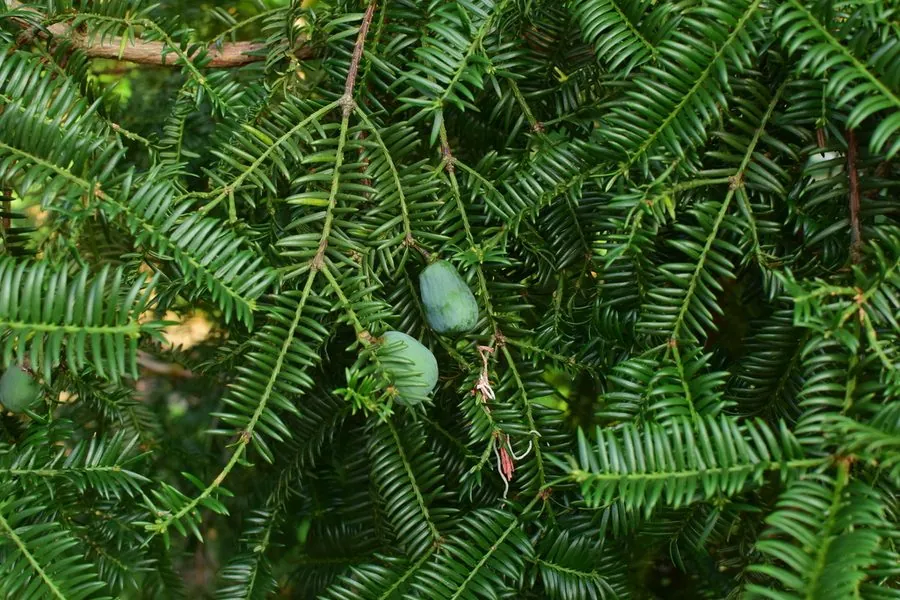

蕨类与裸子植物 · 植物界
香榧 Torreya grandis

香榧是我国特有的珍稀裸子植物，种子炒熟后香脆可口，是著名的干果“香榧子”，栽培历史逾千年。
- 分类
- 门裸子植物门纲松纲目柏目科红豆杉科属榧属
- 栖息环境
- 海拔 300–1000 m 的山地，喜温暖湿润多雾气候和深厚土壤
- 地理分布
- 中国浙江、安徽、江西、福建、湖南、贵州等地，以浙江诸暨最著名
- 保护级别
- IUCN 暂无评估；中国国家二级重点保护野生植物
物种志
香榧是红豆杉科榧属常绿乔木，高可达 25 m，树皮灰褐色、纵裂。叶片条形，坚硬，长 1.5–3 cm，螺旋状排列成两列，表面深绿色，叶背有两条气孔带。雌雄异株，雄球花单生叶腋，雌球花成对生于枝顶。种子核果状，椭圆形，外被肉质假种皮，成熟时由绿转紫褐色，内有坚硬的种壳，种仁可食。
香榧是中国特有的孑遗植物，分布于浙江、安徽、江西、福建、湖南、贵州等地的山地，其中浙江诸暨、嵊州一带的香榧栽培历史已逾千年。它喜温暖湿润、多雾的山地气候，幼树耐阴，生长缓慢，从开花到种子成熟需 2–3 年，故有“三代同堂”之说。种仁即“香榧子”，炒熟后酥脆香浓，是我国传统名贵干果；木材可供家具与雕刻。野生香榧资源稀少，被列为中国国家二级重点保护野生植物。
形态与习性
- 树高可达 25 m
- 叶条形坚硬，排成两列
- 种子核果状，外被肉质假种皮
- 成熟周期从开花到种子成熟约 2–3 年
- 用途香榧子炒食，木材可作器具
- 保护国家二级重点保护野生植物
趣味知识
- 香榧的种子从开花到成熟要两三年，枝头常同时挂着三代果实。
- 炒熟的香榧子酥脆香浓，是江南传统名贵干果。
- 野生香榧稀少，被列为国家二级重点保护野生植物。